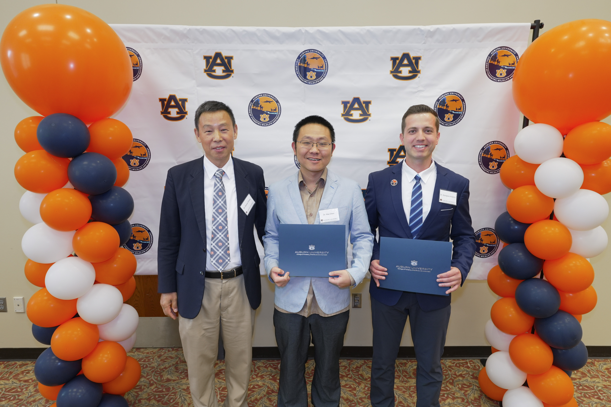

Urban Forestry Lab
College of Forestry, Wildlife and Environment
Auburn University
College of Forestry, Wildlife and Environment
Auburn University
We are a research group focused on advancing knowledge in urban forestry through cutting-edge technologies such as Terrestrial Laser Scanning (TLS), Near-Infrared Spectroscopy (NIRS), and tree-ring science. Our work supports sustainable urban ecosystems and evidence-based arboricultural practices.

Dr. Georgios Arseniou and Dr. Hao Chen won the grantmanship award. (Left to Right) Dr. Daowei Zhang, Dr. Hao Chen, Dr. Georgios Arseniou
Extracted tree cores from urban parks and street trees.
Carbon content analysis of wood samples.
Combining TLS + i-Tree + NIRS estimates for 90 urban trees.
Assistant Professor & Extension Specialist
"Advancing arboriculture and urban forestry."
Graduate Research Assistant
"Exploring urban tree carbon stocks using novel Terrestrial Laser Scanning Technology."
Graduate Research Assistant
"Codominant."
Assistant Professor & Extension Specialist of Urban Forestry
College of Forestry, Wildlife and Environment
Auburn University
3301 CFWE Building, Room 3329
602 Duncan Dr, Auburn, AL 36849
Office: (334) 844-5757
Mobile: (517) 755-6858
Interested in joining our team? Fill out this short form to tell us about yourself, and we’ll be in touch.